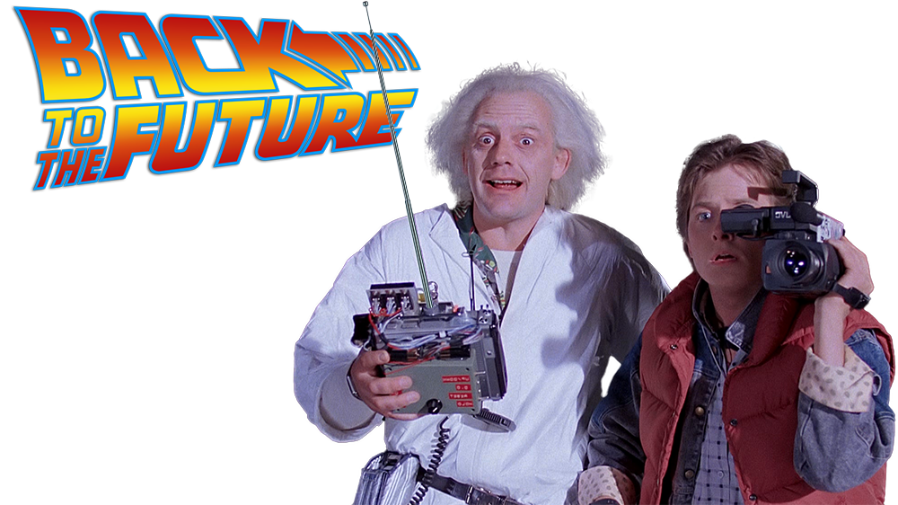
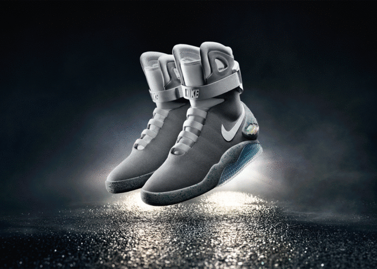

Para ver el video oficial de "El poder del amor", el tema más recordado de la primera entrega de esta saga.

Reencuentro
Uno de los momentos más emotivos de la Comic-Con 2022 en Nueva York, fue el reencuentro de Michael J. Fox y
Christopher Lloyd,
protagonistas de la famosa trilogía "Volver al futuro". A 37 años del estreno de la primera película, los
actores que dieron vida a Marty McFly y al Dr. Emmett Brown,
quienes se vieron involucrados en unos emocionantes viajes por el tiempo que cautivaron a todo el mundo y
siguen emocionando a los espectadores,
fueron ovacionados por el público, compartieron anécdotas sobre sus vidas, sobre las grabaciones del film,
reflexionaron profundamente sobre su amistad y carrera
de décadas juntos, soltando alguna que otra broma que hizo vibrar al público, emocionado, reunido en el lugar.
No es la primera vez que se reencuentran, Regreso al Futuro es una de las películas que marcaron una
generación,
Christopher Lloyd es puro carisma a sus 83 años y Michael J. Fox, es un ejemplo desafiando con orgullo al
parkinson.
Volver al Futuro 4 ???
Pese a que la última película de la saga escrita y dirigida por Robert Zemeckis se estrenó hace 37 años,
los fans todavía mantienen la ilusión de que haya un cuarto episodio de las aventuras de Marty Mc Fly y el “Doc” Emmett Brown.
Un rumor por la red hizo viral este supuesto tráiler de Volver al Futuro 4, pero es una ficción hecha por fanáticos.
El DeLorean de Regreso al Futuro, fue subastado.
La máquina para viajar en el tiempo fue vendida por 413.000 euros.
Comercialmente el DeLorean DMC-12 fue un fracaso, sin embargo, su papel en Volver al Futuro le aseguró otra
vida a este modelo que fue pensado en EEUU,
diseñado en Italia y fabricado entre 1981 y 1982 en Irlanda del Norte.
Entre 1981 y 1982, se fabricaron 9.200 unidades del DeLorean DMC-12, 8.200 las fabrico DMC y las otras 1.000
las terminó de fabricar Consolidated International,
inversionista que se quedo con la fábrica y las unidades a medio terminar, cuando DMC se declaró en quiebra.
En 1985, el DeLorean DMC-12 saltó al estrellato cuando apareció en la película Volver al Futuro. En esa
película el Dr. Emmett L. Brown
fabrica una máquina del tiempo usando como base un DeLorean DMC-12. En la película, el auto cuenta con un
condensador de flujo diseñado por "Doc",
el cual permite transformar al auto en una máquina del tiempo en cuanto se alcanzan las 88 millas por hora.
Lamentablemente, el éxito del auto llego tarde, la compañía ya había desaparecido antes de que su modelo se
convirtiese en una estrella de Hollywood.
Actualmente, la firma renació bajo el nombre DeLorean Motor Company of Texas y comercializa unidades nuevas
idénticas a las de 1981, en cantidades limitadas.
Esta firma también comercializa las piezas originales del modelo.
Para leer la nota completa

Las Nike MAG son las zapatillas hechas por Nike que utilizó Marty McFly, el personaje interpretado por Michael
J. Fox en "Back to The Future II".
Para la segunda película, dirigida por Robert Zemeckis y producida por Steven Spielberg en 1989, Nike creó un
par de zapatillas futuristas
que utilizó McFly. Son las Nike MAG (por magnéticas), que no se comercializaron sino hasta 2011, para ayudar a
la fundación de Michael J. Fox
en su lucha contra el Mal de Parkinson.
Estos tenis fueron diseñados por el legendario Tinker Hatfield, el creador de calzados como el Air Jordan.
En 2011, Nike lanzó la Nike MAG al mercado, pero sin la función de auto amarre. De resto, tenía los mismos
elementos: estéticamente son calzados altos,
de color gris con el swoosh en blanco, con un logotipo electroluminiscente en la correa y matrices de LED
brillantes en la mediasuela y el talón.
La empresa solo produjo 1.500 pares, subastándose a través de eBay. Las ganancias fueron destinadas, como
dijimos, a la fundación de Fox.
Cinco años más tarde, Nike produjo las Nike MAG 2016 Auto-Lacing. Estos sí contaban con sensores para
apretarse y aflojarse automáticamente,
adaptándose a la forma del usuario.
También contaban con luces brillantes integradas en la mediasuela, el talón y la correa, resaltando la forma
futurística del calzado de la película.
Pero para la versión de 2016 se vendieron muchas menos: solo se produjeron 89 pares, en honor al año de
lanzamiento de Volver al Futuro II, 1989.
Las ganancias volvieron a la fundación del actor para la lucha contra el Mal de Parkinson.
Para saber la historia completa de este calzado
Condensador de Flujo
En «Regreso al Futuro» el famoso DeLorean de Marty McFly y el científico Emmet Brown
viaja por el tiempo gracias al «condensador de flujo», un aparatito capaz de romper las leyes de la física para viajar en el tiempo.
Para leer la nota completa
Johnny B. Goode
El famoso actor Michael J. Fox tocó el tema “Johnny B. Goode” del famoso cantante y guitarrista estadounidense Chuck Berry
en la película “Volver al futuro I”, ensayó durante cuatro semanas con su profesor de guitarra para lograr la sincronía de los dedos.
.png)
.png)